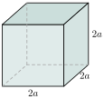
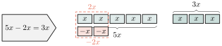
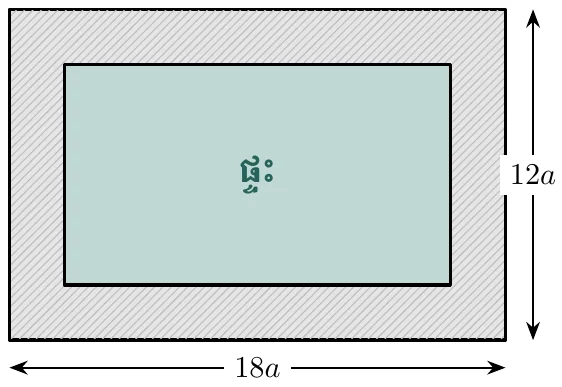
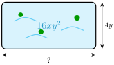
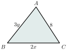
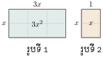
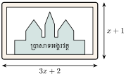
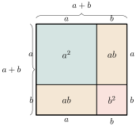
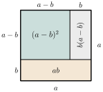
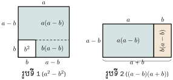

- កំណត់សញ្ញាណឯកធានិងពហុធា
- ដាក់ជាផលគុណកត្តាចំពោះកន្សោមដែលមានកត្តារួម
- ធ្វើប្រមាណវិធីទាំង 4 លើឯកធានិងពហុធា
- ដាក់កន្សោមដឺក្រេទី 2 និងទី 3 ជាផលគុណកត្តា ។
1. ឯកធា
1.1. សញ្ញាណឯកធា
គូបមួយមានទ្រនុងប្រវែង \(\displaystyle 2a\) ។
បើគេគណនាផ្ទៃក្រឡានៃមុខខាងនីមួយៗ គេបាន \(\displaystyle 4a^2\) ។
បើគេគណនាមាឌនៃគូបនេះ គេបាន \(\displaystyle 8a^3\) ។

រង្វាស់ \(\displaystyle 2a\), \(\displaystyle 4a^2\), \(\displaystyle 8a^3\) ដែលតាងដោយចំនួននិងអថេរហៅថា កន្សោមពីជគណិត ។
កន្សោមនីមួយៗខាងលើមានតែវិធីគុណនិងស្វ័យគុណដែលមាននិទស្សន្តជាចំនួនគត់វិជ្ជមានហៅថា ឯកធា ។
ឯកធាផ្សេងទៀតដូចជា \(\displaystyle 7x^2y\), \(\displaystyle -\frac{3}{4}a^2b^4\), \(\displaystyle \sqrt{3}x^2yt\) ។
ចំនួនថេរក៏អាចជាឯកធាបានដែរដូចជា \(\displaystyle 8\) ព្រោះគេអាចសរសេរ \(\displaystyle 8 = 8x^0\) (\(\displaystyle x \ne 0\)) ហើយ \(\displaystyle x^0 = 1\) ។
ចំពោះឯកធា \(\displaystyle 7x^2y\) មាន \(\displaystyle 7\) ហៅថា មេគុណ និង \(\displaystyle x, y\) ហៅថា អថេរ ។
ឯកធា គឺជាកន្សោមពីជគណិតដែលមានតែប្រមាណវិធីគុណ និងស្វ័យគុណដែលនិទស្សន្តជាចំនួនគត់វិជ្ជមាន ឬសូន្យ ។
គេមានឯកធា \(\displaystyle -\frac{3}{4}ab^2x\) ចូរបញ្ជាក់អថេរនិងមេគុណ ។
ឯកធា \(\displaystyle -\frac{3}{4}ab^2x\) មានអថេរ \(\displaystyle a, b, x\) និងមេគុណ \(\displaystyle -\frac{3}{4}\) ។
- ក. បញ្ជាក់មេគុណនិងអថេរនៃឯកធា \(\displaystyle 2\sqrt{3}yt^2\) ។
- ខ.
តើកន្សោមពីជគណិតខាងក្រោមមួយណាជាឯកធា?
\[\frac{1}{5}x^2y, \quad 3x^2+2, \quad 25 - \frac{3}{4}a^4bc^2, \quad zx^2a^3b^4 \text{ ។}\]
មើលដំណោះស្រាយ
- ក. អថេរ \(\displaystyle y, t\) និងមេគុណ \(\displaystyle 2\sqrt{3}\) ។
- ខ. កន្សោមដែលជាឯកធាគឺ \(\displaystyle \frac{1}{5}x^2y\) និង \(\displaystyle zx^2a^3b^4\) ព្រោះមានតែប្រមាណវិធីគុណនិងស្វ័យគុណ ។ កន្សោម \(\displaystyle 3x^2+2\) និង \(\displaystyle 25 - \frac{3}{4}a^4bc^2\) មិនមែនជាឯកធាទេ ព្រោះមានវិធីបូកនិងដក ។
1.2. ឯកធាដូចគ្នា
គេមានឯកធា \(\displaystyle -3xbc^2\) និង \(\displaystyle \frac{2}{3}xbc^2\) ។ ឯកធាទាំងពីរមានផ្នែកអថេរ \(\displaystyle xbc^2\) ដូចគ្នា និងមានមេគុណ \(\displaystyle -3\) និង \(\displaystyle \frac{2}{3}\) ។
ឯកធាទាំងពីរខាងលើនេះមានផ្នែកអថេរ \(\displaystyle xbc^2\) ដូចគ្នា ហៅថា ឯកធាដូចគ្នា ។
ឯកធាដូចគ្នា គឺជាឯកធាដែលមានផ្នែកអថេរដូចគ្នា ។
បណ្តាកន្សោមខាងក្រោម តើមួយណាជាឯកធាដូចគ្នា?
កន្សោម \(\displaystyle 5x^2yz^3\) និង \(\displaystyle \frac{1}{2}x^2yz^3\) ជាឯកធាដូចគ្នា ព្រោះឯកធាទាំងពីរមានផ្នែកអថេរ \(\displaystyle x^2yz^3\) ដូចគ្នា ។
ជ្រើសរើសឯកធាដូចគ្នាក្នុងចំណោមឯកធាខាងក្រោម ៖
មើលដំណោះស្រាយ
ឯកធាដូចគ្នាគឺ \(\displaystyle \frac{1}{2}xy\) និង \(\displaystyle xy\) (ព្រោះមានផ្នែកអថេរ \(\displaystyle xy\) ដូចគ្នា) ។
1.3. ដឺក្រេនៃឯកធា
- ឯកធា \(\displaystyle 3x\) មានដឺក្រេ 1 ព្រោះនិទស្សន្តនៃអថេរ \(\displaystyle x\) ស្មើនឹង 1 ។
- ឯកធា \(\displaystyle 2xy\) មានដឺក្រេ 2 ព្រោះនិទស្សន្តនៃអថេរ \(\displaystyle x, y\) ស្មើនឹង \(\displaystyle 1 + 1 = 2\) ។
- ឯកធា \(\displaystyle ax^2y\) មានដឺក្រេ 4 ព្រោះនិទស្សន្តនៃអថេរ \(\displaystyle a, x, y\) ស្មើនឹង \(\displaystyle 1 + 2 + 1 = 4\) ។
ដឺក្រេឯកធា គឺជាផលបូកនិទស្សន្តនៃអថេរទាំងអស់ ។
ដឺក្រេនៃឯកធា គឺជាផលបូកនិទស្សន្តរបស់អថេរនីមួយៗនៃឯកធា ។
ប្រាប់អថេរនិងដឺក្រេនៃឯកធា \(\displaystyle x^2yb^3\), \(\displaystyle \frac{3}{4}a^2bc\), \(\displaystyle x^3y^2\), \(\displaystyle -3az^2y^3\) ។
| ឯកធា | អថេរ | ដឺក្រេ |
| \(\displaystyle x^2yb^3\) | \(\displaystyle x, y, b\) | \(\displaystyle 2 + 1 + 3 = 6\) |
| \(\displaystyle \frac{3}{4}a^2bc\) | \(\displaystyle a, b, c\) | \(\displaystyle 2 + 1 + 1 = 4\) |
| \(\displaystyle x^3y^2\) | \(\displaystyle x, y\) | \(\displaystyle 3 + 2 = 5\) |
| \(\displaystyle -3az^2y^3\) | \(\displaystyle a, z, y\) | \(\displaystyle 1 + 2 + 3 = 6\) |
កំណត់អថេរនិងរកដឺក្រេនៃឯកធាខាងក្រោម ៖
- ក. \(\displaystyle \frac{1}{2}xyz\)
- ខ. \(\displaystyle 8x^3yz^2\)
- គ. \(\displaystyle 14\)
- ឃ. \(\displaystyle 21ab^4c\)
- ង. \(\displaystyle 3x^2y^3z^4\)
- ច. \(\displaystyle axyz\) ។
មើលដំណោះស្រាយ
- ក. \(\displaystyle \frac{1}{2}xyz\) ៖ មានអថេរ \(\displaystyle x, y, z\) និងដឺក្រេ \(\displaystyle 1+1+1 = 3\) ។
- ខ. \(\displaystyle 8x^3yz^2\) ៖ មានអថេរ \(\displaystyle x, y, z\) និងដឺក្រេ \(\displaystyle 3+1+2 = 6\) ។
- គ. \(\displaystyle 14\) ៖ គ្មានអថេរ (ជាចំនួនថេរ \(\displaystyle 14x^0\)) មានដឺក្រេ 0 ។
- ឃ. \(\displaystyle 21ab^4c\) ៖ មានអថេរ \(\displaystyle a, b, c\) និងដឺក្រេ \(\displaystyle 1+4+1 = 6\) ។
- ង. \(\displaystyle 3x^2y^3z^4\) ៖ មានអថេរ \(\displaystyle x, y, z\) និងដឺក្រេ \(\displaystyle 2+3+4 = 9\) ។
- ច. \(\displaystyle axyz\) ៖ មានអថេរ \(\displaystyle a, x, y, z\) និងដឺក្រេ \(\displaystyle 1+1+1+1 = 4\) ។
1.4. ប្រមាណវិធីបូកនិងដកឯកធាដូចគ្នា
ផ្ទៃក្រឡានៃចតុកោណកែងគឺ \(\displaystyle b, 2b\) និង \(\displaystyle 3b\) ។
ផលបូកផ្ទៃក្រឡានៃចតុកោណកែងរូបទី 1 ស្មើនឹងផ្ទៃក្រឡានៃចតុកោណកែងរូបទី 2 គឺ ៖
សរសេរផលដកឯកធា \(\displaystyle 5x - 2x\) ។

ដើម្បីគណនាផលបូកឬផលដកឯកធាដូចគ្នា គេត្រូវធ្វើប្រមាណវិធីបូកឬដកតែផ្នែកមេគុណ រួចយកលទ្ធផលទៅគុណនឹងផ្នែកអថេរ ។
គណនា
- ក. \(\displaystyle 2xy + 5xy\)
- ខ. \(\displaystyle 3ab^2 + 7ab^2 + ab^2\)
- គ. \(\displaystyle 8x^2y^3z - 3x^2y^3z - 7x^2y^3z\)
- ឃ. \(\displaystyle 10x^2y + x^2y - 5x^2y\) ។
- ក. \(\displaystyle 2xy + 5xy = (2+5)xy = 7xy\)
- ខ. \(\displaystyle 3ab^2 + 7ab^2 + ab^2 = (3+7+1)ab^2 = 11ab^2\)
- គ. \(\displaystyle 8x^2y^3z - 3x^2y^3z - 7x^2y^3z = (8-3-7)x^2y^3z = -2x^2y^3z\)
- ឃ. \(\displaystyle 10x^2y + x^2y - 5x^2y = (10+1-5)x^2y = 6x^2y\) ។
គណនា
- ក. \(\displaystyle 5x^2y - 3x^2y\)
- ខ. \(\displaystyle 3ac^2b^3 + (-4ac^2b^3) + 7ac^2b^3\)
- គ. \(\displaystyle ax^2y^2 + 3ax^2y^2\)
- ឃ. \(\displaystyle y^3c^2b^3 + (-3y^3c^2b^3) + 8y^3c^2b^3\)
- ង. \(\displaystyle 5x^2y + (-3x^2y)\)
- ច. \(\displaystyle \frac{1}{2}ac^2b^3 + \left(-\frac{1}{2}ac^2b^3\right) + 7ac^2b^3\) ។
មើលដំណោះស្រាយ
- ក. \(\displaystyle 5x^2y - 3x^2y = (5-3)x^2y = 2x^2y\)
- ខ. \(\displaystyle 3ac^2b^3 + (-4ac^2b^3) + 7ac^2b^3 = (3-4+7)ac^2b^3 = 6ac^2b^3\)
- គ. \(\displaystyle ax^2y^2 + 3ax^2y^2 = (1+3)ax^2y^2 = 4ax^2y^2\)
- ឃ. \(\displaystyle y^3c^2b^3 + (-3y^3c^2b^3) + 8y^3c^2b^3 = (1-3+8)y^3c^2b^3 = 6y^3c^2b^3\)
- ង. \(\displaystyle 5x^2y + (-3x^2y) = (5-3)x^2y = 2x^2y\)
- ច. \(\displaystyle \frac{1}{2}ac^2b^3 + \left(-\frac{1}{2}ac^2b^3\right) + 7ac^2b^3 = \left(\frac{1}{2}-\frac{1}{2}+7\right)ac^2b^3 = 7ac^2b^3\) ។
1.5. វិធីគុណឯកធា
សួនច្បារមួយមានរាងចតុកោណកែងមានបណ្តោយប្រវែង \(\displaystyle 5x\text{ ឯកតា}\) និងទទឹងប្រវែង \(\displaystyle 2x\text{ ឯកតា}\) ។
គេបានផ្ទៃក្រឡាសួនច្បារនេះជាផលគុណរវាង \(\displaystyle 5x\) និង \(\displaystyle 2x\) (បណ្តោយ \(\displaystyle \times\) ទទឹង) គឺ ៖
គណនា \(\displaystyle (4x^2yc^4)(3xy^3c)\)
ដើម្បីគុណឯកធានិងឯកធា គេផ្ដុំមេគុណនឹងមេគុណ ផ្នែកអថេរនិងផ្នែកអថេរ រួចធ្វើប្រមាណវិធីគុណមេគុណនឹងផ្នែកអថេរ ។
គណនាផ្ទៃក្រឡាផ្លូវជុំវិញផ្ទះមួយតាមរូបខាងស្ដាំ ។

ផ្ទៃក្រឡាផ្លូវជុំវិញផ្ទះ ៖
នៅក្នុងការប្រតិបត្តិគេអាចគណនាដោយខ្លី ៖
ដូចនេះផ្ទៃក្រឡាផ្លូវជុំវិញផ្ទះមាន \(\displaystyle \mathcal{A} = 216a^2\text{ ឯកតាផ្ទៃ}\) ។
គណនា
- ក. \(\displaystyle (5xy^3)(x^2y)\)
- ខ. \(\displaystyle (ab^2c^3)(-4ac^2b)(acb)\)
- គ. \(\displaystyle \left(\frac{1}{2}ab^3\right)(3a^2b^2)\)
- ឃ. \(\displaystyle (-4y^3c^2b^3)(8yc^2b)\)
- ង. \(\displaystyle (\sqrt{5}x^2)\left(\frac{1}{4}x^2\right)\)
- ច. \(\displaystyle \left(\frac{1}{2}ac^2b^3\right)\left(-\frac{1}{2}ac^2b^3\right)(ac^2b^3)\) ។
មើលដំណោះស្រាយ
- ក. \(\displaystyle (5xy^3)(x^2y) = 5(x \cdot x^2)(y^3 \cdot y) = 5x^3y^4\)
- ខ. \(\displaystyle (ab^2c^3)(-4ac^2b)(acb) = -4(a \cdot a \cdot a)(b^2 \cdot b \cdot b)(c^3 \cdot c^2 \cdot 1) = -4a^3b^4c^6\)
- គ. \(\displaystyle \left(\frac{1}{2}ab^3\right)(3a^2b^2) = \left(\frac{1}{2} \times 3\right)(a \cdot a^2)(b^3 \cdot b^2) = \frac{3}{2}a^3b^5\)
- ឃ. \(\displaystyle (-4y^3c^2b^3)(8yc^2b) = (-4 \times 8)(y^3 \cdot y)(c^2 \cdot c^2)(b^3 \cdot b) = -32y^4c^4b^4\)
- ង. \(\displaystyle (\sqrt{5}x^2)\left(\frac{1}{4}x^2\right) = \frac{\sqrt{5}}{4}x^4\)
- ច. \(\displaystyle \left(\frac{1}{2}ac^2b^3\right)\left(-\frac{1}{2}ac^2b^3\right)(ac^2b^3) = \left(\frac{1}{2} \times \left(-\frac{1}{2}\right) \times 1\right)a^3(c^2)^3(b^3)^3 = -\frac{1}{4}a^3b^9c^6\) ។
1.6. វិធីចែកឯកធា
ស្រះទឹកមួយមានរាងចតុកោណកែង មានផ្ទៃក្រឡាស្មើនឹង \(\displaystyle 16xy^2\) ។ គណនាបណ្តោយនៃស្រះទឹកនេះ បើទទឹងមានប្រវែងស្មើនឹង \(\displaystyle 4y\) ។

គេបានបណ្តោយស្រះទឹកស្មើនឹង \(\displaystyle \frac{16xy^2}{4y} = \frac{(16)(x)(y)(y)}{(4)(y)} = 4xy\) ។
គណនាផលចែក \(\displaystyle (8x^4y^5) \div (16x^2y^3)\)
ក្នុងការប្រតិបត្តិគេអាចគណនាដោយខ្លី គេបានផលចែកឯកធាគឺ ៖
ដើម្បីចែកឯកធានឹងឯកធា គេត្រូវសរសេរភាគយកនិងភាគបែងជាផលគុណកត្តាហើយចែកមេគុណនឹងមេគុណ ផ្នែកអថេរនឹងផ្នែកអថេរ ។
គណនា
- ក. \(\displaystyle (5xy^3) \div (xy)\)
- ខ. \(\displaystyle \frac{18xyz^3}{9yz^2}\)
- គ. \(\displaystyle 1a^2b^3 \div 2ab\) ។
- ក. \(\displaystyle (5xy^3) \div (xy) = \frac{5xy^3}{xy} = 5y^2\)
- ខ. \(\displaystyle \frac{18xyz^3}{9yz^2} = 2xz\)
- គ. \(\displaystyle 1a^2b^3 \div 2ab = \frac{a^2b^3}{2ab} = \frac{1}{2}ab^2\) ។
គណនាផលចែក
- ក. \(\displaystyle x^{3n} \div x^{2n}\)
- ខ. \(\displaystyle xy^{4m} \div xy^m\)
- គ. \(\displaystyle \sqrt{3}ab^{12} \div 2ab^4\)
- ឃ. \(\displaystyle \frac{xyz^3}{yz^2}\)
- ង. \(\displaystyle \frac{ax^7b^5}{ax^5b^3}\)
- ច. \(\displaystyle 81z^{12}b^3 \div 3z^{12}b\) ។
មើលដំណោះស្រាយ
- ក. \(\displaystyle x^{3n} \div x^{2n} = x^{3n-2n} = x^n\)
- ខ. \(\displaystyle xy^{4m} \div xy^m = (x^{1-1})(y^{4m-m}) = y^{3m}\)
- គ. \(\displaystyle \sqrt{3}ab^{12} \div 2ab^4 = \frac{\sqrt{3}}{2}a^{1-1}b^{12-4} = \frac{\sqrt{3}}{2}b^8\)
- ឃ. \(\displaystyle \frac{xyz^3}{yz^2} = x z^{3-2} = xz\)
- ង. \(\displaystyle \frac{ax^7b^5}{ax^5b^3} = x^{7-5}b^{5-3} = x^2b^2\)
- ច. \(\displaystyle 81z^{12}b^3 \div 3z^{12}b = \frac{81}{3}z^{12-12}b^{3-1} = 27b^2\) ។
2. ពហុធា
2.1. សញ្ញាណពហុធា
គេមានឯកធា \(\displaystyle -8x^2\) និង \(\displaystyle 3xy\) បើគេធ្វើប្រមាណវិធីបូកឯកធាទាំងពីរនោះ គេបាន \(\displaystyle -8x^2 + 3xy\) ។ ផលបូកនៃពីរឯកតាមិនដូចគ្នាហៅថា ពហុធា ។
គេមានត្រីកោណ \(\displaystyle ABC\) ដូចរូបខាងស្ដាំ ។

ប្រវែងបរិមាត្រនៃត្រីកោណគឺជាផលបូកជ្រុងទាំងបី នោះគេបាន \(\displaystyle AB + BC + CA = 3y + 2x + 8\) ។
ដូចនេះបរិមាត្រនៃ \(\displaystyle \Delta ABC\) ស្មើនឹង \(\displaystyle 3y + 2x + 8\) ជាផលបូកបីឯកតាមិនដូចគ្នា ហៅថា ពហុធា ។
គេមានកន្សោមពីជគណិត ៖
| ឯកធា | ទ្វេធា | ត្រីធា |
| \(\displaystyle 5x^2\) | \(\displaystyle 3x + 1\) | \(\displaystyle 5x^2 - 2x + 7\) |
| \(\displaystyle 3abc\) | \(\displaystyle 2x + 3y\) | \(\displaystyle a^2 + 2ab + b^2\) |
| \(\displaystyle 9\) | \(\displaystyle 4x^2 + 3xy\) | \(\displaystyle 3a + 2b^2 - 3c\) |
ពហុធាជាផលបូកនៃពីរឬច្រើនឯកតាមិនដូចគ្នា ។ ពហុធាដែលមានពីរតួហៅថា ទ្វេធា ហើយពហុធាដែលមានបីតួហៅថា ត្រីធា ។
កន្សោម \(\displaystyle x + \frac{3}{b^2}\) មិនមែនជាពហុធាទេ ព្រោះ \(\displaystyle \frac{3}{b^2}\) មិនមែនជាឯកធា ។
គេមានពហុធា \(\displaystyle 3x-8\), \(\displaystyle \frac{1}{2}x^2 - 3a + 4\), \(\displaystyle -2x^3y - 3y + 5\) ។ កំណត់អថេរនិងចំនួនតួនៃពហុធា ។
| ពហុធា | អថេរ | ចំនួនតួពហុធា |
| \(\displaystyle 3x-8\) | \(\displaystyle x\) | 2 គឺ \(\displaystyle 3x\) និង \(\displaystyle -8\) |
| \(\displaystyle \frac{1}{2}x^2 - 3a + 4\) | \(\displaystyle x, a\) | 3 គឺ \(\displaystyle \frac{1}{2}x^2, -3a\) និង \(\displaystyle 4\) |
| \(\displaystyle -2x^3y - 3y + 5\) | \(\displaystyle x, y\) | 3 គឺ \(\displaystyle -2x^3y, -3y\) និង \(\displaystyle 5\) |
កំណត់អថេរនិងចំនួនតួនៃពហុធា ៖
- ក. \(\displaystyle 6x^3 + 2xy - 4\)
- ខ. \(\displaystyle \sqrt{3}ab + 3x + 3\)
- គ. \(\displaystyle -3x^2y + \frac{1}{2}y - 2\) ។
មើលដំណោះស្រាយ
- ក. \(\displaystyle 6x^3 + 2xy - 4\) ៖ មានអថេរ \(\displaystyle x, y\) និងមាន 3 តួ គឺ \(\displaystyle 6x^3, 2xy, -4\) (ជាត្រីធា) ។
- ខ. \(\displaystyle \sqrt{3}ab + 3x + 3\) ៖ មានអថេរ \(\displaystyle a, b, x\) និងមាន 3 តួ គឺ \(\displaystyle \sqrt{3}ab, 3x, 3\) (ជាត្រីធា) ។
- គ. \(\displaystyle -3x^2y + \frac{1}{2}y - 2\) ៖ មានអថេរ \(\displaystyle x, y\) និងមាន 3 តួ គឺ \(\displaystyle -3x^2y, \frac{1}{2}y, -2\) (ជាត្រីធា) ។
2.2. ដឺក្រេនៃពហុធា
- កន្សោម \(\displaystyle 2x+1\) មានដឺក្រេខ្ពស់នៃ \(\displaystyle x\) ស្មើនឹង 1 ។
- \(\displaystyle 5x^2 - 2x + 1\) មានដឺក្រេខ្ពស់នៃ \(\displaystyle x\) ស្មើនឹង 2 ។
- \(\displaystyle -x^2 - 2x^2y - 1\) មានដឺក្រេខ្ពស់ស្មើនឹង 3 ចំពោះអថេរ \(\displaystyle x\) និង \(\displaystyle y\) ។
- \(\displaystyle 2x^2 - 4x + 3\) ជាពហុធាដឺក្រេទី 2 សរសេរតាមលំដាប់ចុះស្វ័យគុណនៃ \(\displaystyle x\) ។
- \(\displaystyle 1 + 2x^2 + 3x^3\) ជាពហុធាដឺក្រេទី 3 សរសេរតាមលំដាប់កើនស្វ័យគុណនៃ \(\displaystyle x\) ។
ដឺក្រេនៃពហុធា គឺជាដឺក្រេរបស់តួដែលមានដឺក្រេខ្ពស់ជាងគេ ។
សរសេរអថេរ ដឺក្រេ និងរៀបតាមលំដាប់កើន ចុះនៃពហុធាខាងក្រោម ៖
| ពហុធា | អថេរ | ដឺក្រេ | រៀបតាមលំដាប់កើន | រៀបតាមលំដាប់ចុះ |
| \(\displaystyle 11 + 5x^2 - 3x\) | \(\displaystyle x\) | 2 | \(\displaystyle 11 - 3x + 5x^2\) | \(\displaystyle 5x^2 - 3x + 11\) |
| \(\displaystyle 2k^3 - 4 + k^2 - k\) | \(\displaystyle k\) | 3 | \(\displaystyle -4 - k + k^2 + 2k^3\) | \(\displaystyle 2k^3 + k^2 - k - 4\) |
| \(\displaystyle y^3 + 4y^4x + 7 + y\) | \(\displaystyle x, y\) | 5 | \(\displaystyle 7 + y + y^3 + 4y^4x\) | \(\displaystyle 4y^4x + y^3 + y + 7\) |
ប្រាប់ដឺក្រេនៃពហុធាខាងក្រោម ៖
- ក. \(\displaystyle x^2 + x - 3\)
- ខ. \(\displaystyle -\frac{3}{4}x + 3\)
- គ. \(\displaystyle a^2 + 2ab + c^2d\)
- ឃ. \(\displaystyle \sqrt{2}x^2 - 4x\) ។
មើលដំណោះស្រាយ
- ក. ដឺក្រេ 2 (តួ \(\displaystyle x^2\) មានដឺក្រេខ្ពស់ជាងគេ)
- ខ. ដឺក្រេ 1 (តួ \(\displaystyle -\frac{3}{4}x\) មានដឺក្រេ 1)
- គ. ដឺក្រេ 3 (តួ \(\displaystyle c^2d\) មានដឺក្រេ \(\displaystyle 2+1=3\))
- ឃ. ដឺក្រេ 2 (តួ \(\displaystyle \sqrt{2}x^2\) មានដឺក្រេ 2) ។
2.3. វិធីបូកនិងដកពហុធា
គេមានពហុធា \(\displaystyle A = 2a^2 + 3a - 4\) និង \(\displaystyle B = 5a^2 - 7a + 6\) ។ គណនា \(\displaystyle A + B\) ៖
ដើម្បីគណនាផលបូកពហុធាគេត្រូវផ្ដុំ ៖
គេឱ្យពហុធា \(\displaystyle E = 3x^2 - 2x + 7\) និង \(\displaystyle F = x^2 + 4x + 5\) ។ គណនា \(\displaystyle E - F\) ៖
ដើម្បីបូកឬដកពីរពហុធា គេត្រូវបូកឬដកឯកធាដូចគ្នា ។
គេអាចធ្វើប្រមាណវិធីបូក ឬដកពីរពហុធាតាមរបៀបឈរដូចខាងក្រោម ។
គេឱ្យពហុធា \(\displaystyle A = 5x^3 - 2x^2 + 7x + 4\) និង \(\displaystyle B = 2x^3 + 4x^2 - 6\) ។ គណនា \(\displaystyle A + B\) និង \(\displaystyle A - B\) ។
គណនា \(\displaystyle A + B\) ៖
\[\begin{array}{rrrrr} & 5x^3 & - 2x^2 & + 7x & + 4 \\ + & 2x^3 & + 4x^2 & & - 6 \\ \hline & 7x^3 & + 2x^2 & + 7x & - 2 \end{array}\]គណនា \(\displaystyle A - B\) ៖
\[\begin{array}{rrrrr} & 5x^3 & - 2x^2 & + 7x & + 4 \\ - & 2x^3 & + 4x^2 & & - 6 \\ \hline & 3x^3 & - 6x^2 & + 7x & + 10 \end{array}\]
គណនា \(\displaystyle M+N\) និង \(\displaystyle M-N\) ដែល
- ក. \(\displaystyle M = 2x^2 + 3x + 1\) និង \(\displaystyle N = -x^2 + 2x + 4\)
- ខ. \(\displaystyle M = 12a^2 + 2ab + 54\) និង \(\displaystyle N = 9a^2 - 4ab - 25\)
- គ. \(\displaystyle M = \frac{1}{2}xy^2 + 2xy - 3\) និង \(\displaystyle N = \frac{3}{2}xy^2 - 12xy - 16\) ។
មើលដំណោះស្រាយ
- ក. \(\displaystyle M+N = (2x^2-x^2) + (3x+2x) + (1+4) = x^2 + 5x + 5\)
\(\displaystyle M-N = (2x^2-(-x^2)) + (3x-2x) + (1-4) = 3x^2 + x - 3\) - ខ. \(\displaystyle M+N = (12a^2+9a^2) + (2ab-4ab) + (54-25) = 21a^2 - 2ab + 29\)
\(\displaystyle M-N = (12a^2-9a^2) + (2ab-(-4ab)) + (54-(-25)) = 3a^2 + 6ab + 79\) - គ. \(\displaystyle M+N = \left(\frac{1}{2}+\frac{3}{2}\right)xy^2 + (2-12)xy + (-3-16) = 2xy^2 - 10xy - 19\)
\(\displaystyle M-N = \left(\frac{1}{2}-\frac{3}{2}\right)xy^2 + (2-(-12))xy + (-3-(-16)) = -xy^2 + 14xy + 13\) ។
2.4. វិធីគុណពហុធា
គណនាផ្ទៃក្រឡាចតុកោណកែងដូចរូប ។

ផ្ទៃក្រឡាចតុកោណកែងរូបទី 1 គឺ \(\displaystyle x \times 3x = 3x^2\)
ផ្ទៃក្រឡាចតុកោណកែងរូបទី 2 គឺ \(\displaystyle x \times 1 = x\)
ផ្ទៃក្រឡាចតុកោណកែងទាំងពីរគឺ \(\displaystyle 3x^2 + x\)
ផលគុណ \(\displaystyle x(3x+1)\) គឺជាផ្ទៃក្រឡារបស់ចតុកោណកែងដែលមានជ្រុង \(\displaystyle x\) និង \(\displaystyle 3x+1\) គឺ ៖
ដើម្បីគុណឯកធានឹងពហុធា គេគុណឯកធានឹងតួនីមួយៗនៃពហុធា រួចបង្រួមលទ្ធផល ។
រូបថតមួយផ្ទាំងមានរាងចតុកោណកែងដែលមានវិមាត្រ \(\displaystyle 3x+2\) និង \(\displaystyle x+1\) គិតជាម៉ែត្រ ។

គេបានផ្ទៃក្រឡារូបថត \(\displaystyle =\) បណ្តោយ \(\displaystyle \times\) ទទឹង ៖
គេគុណគ្រប់តួនៃពហុធាទី 1 ទៅគ្រប់តួនៃពហុធាទី 2 រួចបង្រួមលទ្ធផល ។
ដើម្បីគុណពហុធានឹងពហុធា គេយកតួនីមួយៗនៃពហុធាទី 1 គុណគ្រប់តួនៃពហុធាទី 2 រួចបង្រួមលទ្ធផល ។
គណនាផលគុណនៃពហុធា \(\displaystyle 3x^2\) និង \(\displaystyle 4x^3 + xy - 5y^2\) ។
គណនាផលគុណនៃពហុធា \(\displaystyle 1 + x^2 - 3x\) និង \(\displaystyle 2x - 3\) ។
រៀបពហុធាតាមលំដាប់ចុះ \(\displaystyle (x^2 - 3x + 1) \times (2x - 3)\) ៖
សរសេរចំនួនគត់ \(\displaystyle 7368\) ជាពហុធា ហើយរៀបតាមលំដាប់ចុះនៃដឺក្រេ \(\displaystyle 10\) ។
\(\displaystyle 7368 = 7000 + 300 + 60 + 8 = 7 \times 10^3 + 3 \times 10^2 + 6 \times 10 + 8\) ។
គណនាផលគុណ រួចបង្រួមលទ្ធផលបើអាចធ្វើបាន ៖
- ក. \(\displaystyle 2x^2(2x^2 + 3x - 1)\)
- ខ. \(\displaystyle ab^2(a^2 + 2ab + a)\)
- គ. \(\displaystyle (a^2 + 2ab)(a - b)\)
- ឃ. \(\displaystyle (9a^2 - 25)(a^5 + ab)\)
- ង. \(\displaystyle M = \frac{1}{2}xy^2\left(\frac{2}{3}xy - 3\right)\)
- ច. \(\displaystyle (xy^2 - 12xy - 16)(x^2y - 7 + y^2)\) ។
មើលដំណោះស្រាយ
- ក. \(\displaystyle 2x^2(2x^2 + 3x - 1) = 4x^4 + 6x^3 - 2x^2\)
- ខ. \(\displaystyle ab^2(a^2 + 2ab + a) = a^3b^2 + 2a^2b^3 + a^2b^2\)
- គ. \(\displaystyle (a^2 + 2ab)(a - b) = a^3 - a^2b + 2a^2b - 2ab^2 = a^3 + a^2b - 2ab^2\)
- ឃ. \(\displaystyle (9a^2 - 25)(a^5 + ab) = 9a^7 + 9a^3b - 25a^5 - 25ab\)
- ង. \(\displaystyle M = \frac{1}{2}xy^2\left(\frac{2}{3}xy - 3\right) = \frac{1}{3}x^2y^3 - \frac{3}{2}xy^2\)
- ច.
\(\displaystyle (xy^2 - 12xy - 16)(x^2y - 7 + y^2)\)
\[= xy^2(x^2y - 7 + y^2) - 12xy(x^2y - 7 + y^2) - 16(x^2y - 7 + y^2)\]\[= x^3y^3 - 7xy^2 + xy^4 - 12x^3y^2 + 84xy - 12xy^3 - 16x^2y + 112 - 16y^2 \text{ ។}\]
2.5. វិធីចែកពហុធា
ក្នុងវិធីចែករវាងចំនួន 21 និង 7 គេអាចសរសេរ \(\displaystyle 21 \div 7 = \frac{21}{7} = 3\) ។
ដូចនេះ \(\displaystyle 21 = 3 \times 7\) នោះគេថា 21 ចែកដាច់នឹង 7 ហើយ 7 ជាតួចែកនៃ 21 ។ 21 ជាផលគុណរវាង 7 និង 3 ។
គណនា \(\displaystyle (15x^4 - 30x^6) \div 5x^2\)
ដើម្បីចែកពហុធានឹងឯកធា គេចែកតួនីមួយៗនៃពហុធានឹងឯកធានោះ ។
គណនាផលចែក \(\displaystyle (x^2 - 7x + 10) \div (x - 2)\)
ដូចនេះ \(\displaystyle (x^2 - 7x + 10) \div (x - 2) = x - 5\) ។
គណនាផលចែក \(\displaystyle (x^2 - 2x + 4) \div (x - 1)\)
ដោយផលចែកនៃពហុធានឹងពហុធា មានសំណល់នោះ គេអាចសរសេរ ៖
បើសំណល់នៃវិធីចែកស្មើនឹងសូន្យ គេថាពហុធាទី 1 ចែកដាច់នឹងពហុធាទី 2 ។
បើសំណល់នៃវិធីចែកមិនស្មើនឹង 0 គេថាពហុធាទី 1 ចែកមិនដាច់នឹងពហុធាទី 2 ។ ក្នុងករណីនេះ គេសរសេរផលចែកជាផលបូកនៃពហុធានឹងកន្សោមប្រភាគមួយ ។
គណនាផលចែក \(\displaystyle (8y^3 + 4y^2 - 7) \div (2y + 3)\)
ដូចនេះ \(\displaystyle (8y^3 + 4y^2 - 7) \div (2y + 3) = 4y^2 - 4y + 6 - \frac{25}{2y + 3}\) ។
ធ្វើប្រមាណវិធីចែកពហុធា \(\displaystyle (x^3 - 2) \div (x - 1)\)
គេអាចសរសេរពហុធា \(\displaystyle x^3 - 2 = x^3 + 0x^2 + 0x - 2\) ៖
ដូចនេះ \(\displaystyle \frac{x^3 - 2}{x - 1} = x^2 + x + 1 - \frac{1}{x - 1}\) ។
ធ្វើប្រមាណវិធីចែកខាងក្រោម ៖
- ក. \(\displaystyle (a^2b^3 + 2ab) \div (ab)\)
- ខ. \(\displaystyle (5x^2y^4 + 2x^3y^5 - 12x^2y^2) \div (x^2y^2)\)
- គ. \(\displaystyle (6x^2 + 5x - 4) \div (2x - 1)\)
- ឃ. \(\displaystyle (a^2 + 6a - 55) \div (a - 5)\) ។
មើលដំណោះស្រាយ
- ក. \(\displaystyle (a^2b^3 + 2ab) \div (ab) = \frac{a^2b^3}{ab} + \frac{2ab}{ab} = ab^2 + 2\)
- ខ. \(\displaystyle (5x^2y^4 + 2x^3y^5 - 12x^2y^2) \div (x^2y^2) = 5y^2 + 2xy^3 - 12\)
- គ.
\(\displaystyle (6x^2 + 5x - 4) \div (2x - 1)\) ៖
\[\begin{array}{rl} 6x^2 + 5x - 4 & \big| \underline{\ 2x - 1\ } \\ -(6x^2 - 3x)\phantom{- 4} & 3x + 4 \\ \cline{1-1} 8x - 4 & \\ -(8x - 4) & \\ \cline{1-1} 0 & \end{array}\]ដូចនេះ \(\displaystyle (6x^2 + 5x - 4) \div (2x - 1) = 3x + 4\) ។
- ឃ.
\(\displaystyle (a^2 + 6a - 55) \div (a - 5)\) ៖
\[\begin{array}{rl} a^2 + 6a - 55 & \big| \underline{\ a - 5\ } \\ -(a^2 - 5a)\phantom{- 55} & a + 11 \\ \cline{1-1} 11a - 55 & \\ -(11a - 55) & \\ \cline{1-1} 0 & \end{array}\]ដូចនេះ \(\displaystyle (a^2 + 6a - 55) \div (a - 5) = a + 11\) ។
3. សមភាពសំខាន់ៗ
3.1. ពង្រាតការេនៃទ្វេធា
- ពង្រាត \(\displaystyle (a+b)^2\) ៖
បើ \(\displaystyle a\) និង \(\displaystyle b\) វិជ្ជមាន ហើយ \(\displaystyle (a+b)^2\) គឺជាផ្ទៃក្រឡាការេដែលមានរង្វាស់ជ្រុងស្មើនឹង \(\displaystyle (a+b)\) នោះផ្ទៃក្រឡារបស់វាស្មើនឹងផលបូកផ្ទៃក្រឡាតូចៗខាងក្នុង ៖

\(\displaystyle (a+b)^2 = a^2 + 2ab + b^2 \qquad (1)\)
ការេនៃទ្វេធា \(\displaystyle (a+b)^2 = a^2 + 2ab + b^2\) មានសញ្ញា \(\displaystyle (+)\) ដូចគ្នា ។
ពង្រាត \(\displaystyle (x+3)^2\)
\(\displaystyle (x+3)^2 = x^2 + 2(x)(3) + 3^2 = x^2 + 6x + 9\) ។
ពង្រាត \(\displaystyle (2m+3n)^2\)
\(\displaystyle (2m+3n)^2 = (2m)^2 + 2(2m)(3n) + (3n)^2 = 4m^2 + 12mn + 9n^2\) ។
គណនា \(\displaystyle 101^2\)
គេសរសេរ \(\displaystyle 101^2 = (100+1)^2 = 100^2 + 2(100)(1) + 1^2 = 10\,000 + 200 + 1 = 10\,201\) ។
ពង្រាតកន្សោមខាងក្រោម ៖
- ក. \(\displaystyle (b+2a)^2\)
- ខ. \(\displaystyle (5x+2y)^2\)
- គ. \(\displaystyle (6x^2+4)^2\)
- ឃ. \(\displaystyle (a+5)^2\) ។
មើលដំណោះស្រាយ
- ក. \(\displaystyle (b+2a)^2 = b^2 + 2(b)(2a) + (2a)^2 = b^2 + 4ab + 4a^2\)
- ខ. \(\displaystyle (5x+2y)^2 = (5x)^2 + 2(5x)(2y) + (2y)^2 = 25x^2 + 20xy + 4y^2\)
- គ. \(\displaystyle (6x^2+4)^2 = (6x^2)^2 + 2(6x^2)(4) + 4^2 = 36x^4 + 48x^2 + 16\)
- ឃ. \(\displaystyle (a+5)^2 = a^2 + 2(a)(5) + 5^2 = a^2 + 10a + 25\) ។
- ពង្រាត \(\displaystyle (a-b)^2\) ៖
គណនាផ្ទៃក្រឡាផ្នែកប្រផេះ ៖ គេមាន \(\displaystyle a\) និង \(\displaystyle b\) វិជ្ជមានដែល \(\displaystyle a > b\) ។

\(\displaystyle (a-b)^2\) ជាផ្ទៃក្រឡាការេដែលមានជ្រុង \(\displaystyle a-b\) គេបាន ៖
\(\displaystyle (a-b)^2 = a^2 - 2ab + b^2 \qquad (2)\)
ការេនៃទ្វេធា \(\displaystyle (a-b)^2 = a^2 - 2ab + b^2\) មានសញ្ញា \(\displaystyle (-)\) ត្រង់តួទី 2 ។
ពង្រាត \(\displaystyle (x-1)^2\)
\(\displaystyle (x-1)^2 = x^2 - 2(x)(1) + 1^2 = x^2 - 2x + 1\) ។
ពង្រាត \(\displaystyle \left(\frac{1}{2}m - n\right)^2\)
\(\displaystyle \left(\frac{1}{2}m - n\right)^2 = \left(\frac{1}{2}m\right)^2 - 2\left(\frac{1}{2}m\right)(n) + n^2 = \frac{1}{4}m^2 - mn + n^2\) ។
គណនា \(\displaystyle 99^2\)
គេសរសេរ \(\displaystyle 99^2 = (100-1)^2 = 100^2 - 2(100)(1) + 1^2 = 10\,000 - 200 + 1 = 9801\) ។
ពង្រាតកន្សោមខាងក្រោម ៖
- ក. \(\displaystyle (x-2y)^2\)
- ខ. \(\displaystyle (5b-y)^2\)
- គ. \(\displaystyle (x-4y)^2\)
- ឃ. \(\displaystyle \left(\frac{1}{5}a-5\right)^2\) ។
មើលដំណោះស្រាយ
- ក. \(\displaystyle (x-2y)^2 = x^2 - 2(x)(2y) + (2y)^2 = x^2 - 4xy + 4y^2\)
- ខ. \(\displaystyle (5b-y)^2 = (5b)^2 - 2(5b)(y) + y^2 = 25b^2 - 10by + y^2\)
- គ. \(\displaystyle (x-4y)^2 = x^2 - 2(x)(4y) + (4y)^2 = x^2 - 8xy + 16y^2\)
- ឃ. \(\displaystyle \left(\frac{1}{5}a-5\right)^2 = \left(\frac{1}{5}a\right)^2 - 2\left(\frac{1}{5}a\right)(5) + 5^2 = \frac{1}{25}a^2 - 2a + 25\) ។
- ពង្រាត \(\displaystyle (a-b)(a+b)\) ៖
គណនាផ្ទៃក្រឡាផ្នែកប្រផេះ បើ \(\displaystyle a\) និង \(\displaystyle b\) វិជ្ជមានហើយ \(\displaystyle a > b\) ។

តាមរូបទី 2 ផ្ទៃក្រឡាផ្នែកប្រផេះទាំងពីរស្មើនឹង \(\displaystyle a(a-b) + b(a-b) = (a-b)(a+b)\) ។
តាមរូបទី 1 ផ្ទៃក្រឡាផ្នែកប្រផេះស្មើនឹង \(\displaystyle a^2 - b^2\) ។
ដូចនេះគេបាន \(\displaystyle (a-b)(a+b) = a^2 - b^2\) ។
បើ \(\displaystyle a\) និង \(\displaystyle b\) ជាចំនួនរ៉ឺយ៉ាល់នោះគេបាន \(\displaystyle (a-b)(a+b) = a^2 + ab - ab - b^2 = a^2 - b^2\) ។
\(\displaystyle (a-b)(a+b) = a^2 - b^2 \qquad (3)\)
ពង្រាត \(\displaystyle (x-2)(x+2)\)
\(\displaystyle (x-2)(x+2) = x^2 - 2^2 = x^2 - 4\) ។
ពង្រាត \(\displaystyle \left(\frac{1}{2}m-3n\right)\left(\frac{1}{2}m+3n\right)\)
\(\displaystyle \left(\frac{1}{2}m-3n\right)\left(\frac{1}{2}m+3n\right) = \left(\frac{1}{2}m\right)^2 - (3n)^2 = \frac{1}{4}m^2 - 9n^2\) ។
គណនា \(\displaystyle 101 \times 99\)
គេសរសេរ \(\displaystyle 101 \times 99 = (100+1)(100-1) = 100^2 - 1^2 = 10\,000 - 1 = 9999\) ។
ធ្វើប្រមាណវិធីបន្ត ។ តើអ្នកសង្កេតឃើញយ៉ាងដូចម្តេច?
មើលដំណោះស្រាយ
- \(\displaystyle (1+1)(1-1) = 2 \times 0 = 0\)
- \(\displaystyle (2+1)(2-1) = 3 \times 1 = 3\)
- \(\displaystyle (3+2)(3-2) = 5 \times 1 = 5\)
- \(\displaystyle (4+3)(4-3) = 7 \times 1 = 7\)
- \(\displaystyle (5+4)(5-4) = 9 \times 1 = 9\)
- \(\displaystyle (10+9)(10-9) = 19 \times 1 = 19\) ។
ការសង្កេត ៖ ប្រមាណវិធីនេះមានទម្រង់ \(\displaystyle (n + (n-1))(n - (n-1)) = n^2 - (n-1)^2 = 2n - 1\) ។ លទ្ធផលទទួលបានជាបណ្ដាចំនួនសេសរៀងគ្នា \(\displaystyle 3, 5, 7, 9, \dots, 19\) ។
3.2. ពង្រាតគូបនៃទ្វេធា
- ពង្រាត \(\displaystyle (a+b)^3\) ៖
\(\displaystyle (a+b)^3 = (a+b)^2(a+b)\) ដោយ \(\displaystyle (a+b)^2 = a^2 + 2ab + b^2\) ៖
\(\displaystyle (a+b)^3 = a^3 + 3a^2b + 3ab^2 + b^3 \qquad (4)\)
ពង្រាត \(\displaystyle (x+1)^3\)
\(\displaystyle (x+1)^3 = x^3 + 3(x^2)(1) + 3(x)(1^2) + 1^3 = x^3 + 3x^2 + 3x + 1\) ។
ពង្រាតកន្សោមខាងក្រោម ៖
- ក. \(\displaystyle (x+2y)^3\)
- ខ. \(\displaystyle (x+3y)^3\)
- គ. \(\displaystyle (3x+4y)^3\)
- ឃ. \(\displaystyle \left(\frac{1}{5}a+b\right)^3\) ។
មើលដំណោះស្រាយ
- ក. \(\displaystyle (x+2y)^3 = x^3 + 3(x^2)(2y) + 3(x)(2y)^2 + (2y)^3 = x^3 + 6x^2y + 12xy^2 + 8y^3\)
- ខ. \(\displaystyle (x+3y)^3 = x^3 + 3(x^2)(3y) + 3(x)(3y)^2 + (3y)^3 = x^3 + 9x^2y + 27xy^2 + 27y^3\)
- គ. \(\displaystyle (3x+4y)^3 = (3x)^3 + 3(3x)^2(4y) + 3(3x)(4y)^2 + (4y)^3 = 27x^3 + 108x^2y + 144xy^2 + 64y^3\)
- ឃ. \(\displaystyle \left(\frac{1}{5}a+b\right)^3 = \left(\frac{1}{5}a\right)^3 + 3\left(\frac{1}{5}a\right)^2b + 3\left(\frac{1}{5}a\right)b^2 + b^3 = \frac{1}{125}a^3 + \frac{3}{25}a^2b + \frac{3}{5}ab^2 + b^3\) ។
- ពង្រាត \(\displaystyle (a-b)^3\) ៖
\(\displaystyle (a-b)^3 = (a-b)(a-b)^2 = (a-b)(a^2-2ab+b^2) = a^3 - 2a^2b + ab^2 - a^2b + 2ab^2 - b^3\) ៖
\(\displaystyle (a-b)^3 = a^3 - 3a^2b + 3ab^2 - b^3 \qquad (5)\)
ពង្រាត \(\displaystyle (x-1)^3\)
\(\displaystyle (x-1)^3 = x^3 - 3(x^2)(1) + 3(x)(1^2) - 1^3 = x^3 - 3x^2 + 3x - 1\) ។
ពង្រាតកន្សោមខាងក្រោម ៖
- ក. \(\displaystyle (3x-2y)^3\)
- ខ. \(\displaystyle (2x-y)^3\)
- គ. \(\displaystyle (3a-2b)^3\)
- ឃ. \(\displaystyle \left(\frac{1}{5}t-k\right)^3\) ។
មើលដំណោះស្រាយ
- ក. \(\displaystyle (3x-2y)^3 = (3x)^3 - 3(3x)^2(2y) + 3(3x)(2y)^2 - (2y)^3 = 27x^3 - 54x^2y + 36xy^2 - 8y^3\)
- ខ. \(\displaystyle (2x-y)^3 = (2x)^3 - 3(2x)^2y + 3(2x)y^2 - y^3 = 8x^3 - 12x^2y + 6xy^2 - y^3\)
- គ. \(\displaystyle (3a-2b)^3 = (3a)^3 - 3(3a)^2(2b) + 3(3a)(2b)^2 - (2b)^3 = 27a^3 - 54a^2b + 36ab^2 - 8b^3\)
- ឃ. \(\displaystyle \left(\frac{1}{5}t-k\right)^3 = \frac{1}{125}t^3 - \frac{3}{25}t^2k + \frac{3}{5}tk^2 - k^3\) ។
- ពង្រាត \(\displaystyle (a-b)(a^2+ab+b^2)\) ៖
\(\displaystyle (a-b)(a^2+ab+b^2) = a^3 - b^3 \qquad (6)\)
ពង្រាត \(\displaystyle (x-1)(x^2+x+1)\)
\(\displaystyle (x-1)(x^2+x+1) = x^3 - 1^3 = x^3 - 1\) ។
ពង្រាតកន្សោមខាងក្រោម ៖
- ក. \(\displaystyle (a-1)(a^2+a+1)\)
- ខ. \(\displaystyle (x-3)(x^2+3x+9)\)
- គ. \(\displaystyle (2x-1)(4x^2+2x+1)\)
- ឃ. \(\displaystyle (\sqrt{2}a-3b)(2a^2+3\sqrt{2}ab+9b^2)\) ។
មើលដំណោះស្រាយ
- ក. \(\displaystyle (a-1)(a^2+a+1) = a^3 - 1\)
- ខ. \(\displaystyle (x-3)(x^2+3x+9) = x^3 - 3^3 = x^3 - 27\)
- គ. \(\displaystyle (2x-1)(4x^2+2x+1) = (2x)^3 - 1^3 = 8x^3 - 1\)
- ឃ. \(\displaystyle (\sqrt{2}a-3b)(2a^2+3\sqrt{2}ab+9b^2) = (\sqrt{2}a)^3 - (3b)^3 = 2\sqrt{2}a^3 - 27b^3\) ។
- ពង្រាត \(\displaystyle (a+b)(a^2-ab+b^2)\) ៖
\(\displaystyle (a+b)(a^2-ab+b^2) = a^3 + b^3 \qquad (7)\)
ពង្រាត \(\displaystyle (x+1)(x^2-x+1)\)
\(\displaystyle (x+1)(x^2-x+1) = x^3 + 1^3 = x^3 + 1\) ។
ពង្រាតកន្សោមខាងក្រោម ៖
- ក. \(\displaystyle (a+1)(a^2-a+1)\)
- ខ. \(\displaystyle (x+3)(x^2-3x+9)\)
- គ. \(\displaystyle (2x+1)(4x^2-2x+1)\)
- ឃ. \(\displaystyle (\sqrt{2}a+3b)(2a^2-3\sqrt{2}ab+9b^2)\) ។
មើលដំណោះស្រាយ
- ក. \(\displaystyle (a+1)(a^2-a+1) = a^3 + 1\)
- ខ. \(\displaystyle (x+3)(x^2-3x+9) = x^3 + 3^3 = x^3 + 27\)
- គ. \(\displaystyle (2x+1)(4x^2-2x+1) = (2x)^3 + 1^3 = 8x^3 + 1\)
- ឃ. \(\displaystyle (\sqrt{2}a+3b)(2a^2-3\sqrt{2}ab+9b^2) = (\sqrt{2}a)^3 + (3b)^3 = 2\sqrt{2}a^3 + 27b^3\) ។
សង្ខេបសមភាពសំខាន់ៗទាំង ៧
គេប្រើត្រីកោណប៉ាស្កាល់ (Blaise Pascal, 1623–1662) ដើម្បីងាយស្រួលក្នុងការចងចាំមេគុណនៃទ្វេធា \(\displaystyle (a+b)^n\) ៖
4. ការដាក់ជាផលគុណកត្តា
4.1. កត្តារួម
គេឱ្យកន្សោម \(\displaystyle 3x+3y+3z\) ។ គេសង្កេតឃើញថាគ្រប់តូនីមួយៗនៃកន្សោមមានចំនួន 3 ដូចគ្នា ។
ដូចនេះកន្សោម \(\displaystyle 3x+3y+3z\) គេសរសេរ \(\displaystyle 3x+3y+3z = 3(x+y+z)\) ។ គេបានដាក់ 3 ជាកត្តារួមនៃកន្សោមខាងលើ ។ កន្សោម \(\displaystyle 3(x+y+z)\) ហៅថា ផលគុណកត្តា ។
គេមានកន្សោម \(\displaystyle x(2b-3) + y(2b-3)\) ដែលតួទាំងពីរមាន \(\displaystyle (2b-3)\) ដូចគ្នា ។
គេអាចដាក់ \(\displaystyle (2b-3)\) ជាកត្តារួមគឺ \(\displaystyle x(2b-3) + y(2b-3) = (2b-3)(x+y)\) ។
ដាក់កន្សោម \(\displaystyle (3x+2y)(x+1) - y(x+1)\) ជាផលគុណកត្តា ។
4.2. ការប្រើសមភាពសំខាន់ៗ
- ប្រើរូបមន្ត \(\displaystyle (a+b)^2\) និង \(\displaystyle (a-b)^2\) ៖
ដាក់កន្សោមខាងក្រោម ជាផលគុណកត្តាដឺក្រេទី 1
- ក. \(\displaystyle 4a^2 + 12a + 9\)
- ខ. \(\displaystyle \frac{x^2}{4} - 4x + 16\) ។
- ក.
\(\displaystyle 4a^2 + 12a + 9\) ដោយ \(\displaystyle 4a^2 = (2a)^2\), \(\displaystyle 12a = 2 \times 2a \times 3\) និង \(\displaystyle 9 = 3^2\)
តាមសមភាព \(\displaystyle a^2+2ab+b^2 = (a+b)^2\) គេបាន ៖\[4a^2 + 12a + 9 = (2a+3)^2 = (2a+3)(2a+3)\] - ខ. \(\displaystyle \frac{x^2}{4} - 4x + 16 = \left(\frac{x}{2}\right)^2 - 2\left(\frac{x}{2}\right)(4) + 4^2 = \left(\frac{x}{2}-4\right)^2 = \left(\frac{x}{2}-4\right)\left(\frac{x}{2}-4\right)\) ។
ដាក់កន្សោមខាងក្រោម ជាផលគុណកត្តាដឺក្រេទី 1 ៖
- ក. \(\displaystyle x^2 + 10x + 25\)
- ខ. \(\displaystyle x^2 - 20x + 100\) ។
- ក. \(\displaystyle x^2 + 10x + 25 = x^2 + 2(x)(5) + 5^2 = (x+5)^2 = (x+5)(x+5)\)
- ខ. \(\displaystyle x^2 - 20x + 100 = x^2 - 2(x)(10) + 10^2 = (x-10)^2 = (x-10)(x-10)\) ។
ដាក់កន្សោមខាងក្រោម ជាការេនៃទ្វេធា ៖
- ក. \(\displaystyle 4x^2 - 16xy + 16y^2\)
- ខ. \(\displaystyle 2m^2 + \sqrt{2}mn + \frac{n^2}{4}\) ។
- ក. \(\displaystyle 4x^2 - 16xy + 16y^2 = (2x)^2 - 2(2x)(4y) + (4y)^2 = (2x - 4y)^2\)
- ខ. \(\displaystyle 2m^2 + \sqrt{2}mn + \frac{n^2}{4} = (\sqrt{2}m)^2 + 2(\sqrt{2}m)\left(\frac{n}{2}\right) + \left(\frac{n}{2}\right)^2 = \left(\sqrt{2}m + \frac{n}{2}\right)^2\) ។
ដាក់កន្សោមខាងក្រោម ជាផលគុណកត្តាដឺក្រេទី 1 ៖
- ក. \(\displaystyle x^2 - 8x + 16\)
- ខ. \(\displaystyle y^2 + 10y + 25\)
- គ. \(\displaystyle n^2 - 12n + 36\)
- ឃ. \(\displaystyle a^2 + 16a + 64\) ។
មើលដំណោះស្រាយ
- ក. \(\displaystyle x^2 - 8x + 16 = (x-4)^2 = (x-4)(x-4)\)
- ខ. \(\displaystyle y^2 + 10y + 25 = (y+5)^2 = (y+5)(y+5)\)
- គ. \(\displaystyle n^2 - 12n + 36 = (n-6)^2 = (n-6)(n-6)\)
- ឃ. \(\displaystyle a^2 + 16a + 64 = (a+8)^2 = (a+8)(a+8)\) ។
- ប្រើរូបមន្ត \(\displaystyle a^3+b^3\) និង \(\displaystyle a^3-b^3\) ៖
ដាក់កន្សោមខាងក្រោម ជាផលគុណកត្តា ៖
- ក. \(\displaystyle 8x^3 + y^3\)
- ខ. \(\displaystyle 27y^3 - 64\) ។
- ក. គេមាន \(\displaystyle 8x^3 + y^3 = (2x)^3 + y^3 = (2x+y)((2x)^2 - 2x \cdot y + y^2) = (2x+y)(4x^2 - 2xy + y^2)\)
- ខ. គេមាន \(\displaystyle 27y^3 - 64 = (3y)^3 - 4^3 = (3y-4)((3y)^2 + 3y \cdot 4 + 4^2) = (3y-4)(9y^2 + 12y + 16)\) ។
ដាក់កន្សោមខាងក្រោម ជាផលគុណកត្តា ៖
- ក. \(\displaystyle x^3 - 27\)
- ខ. \(\displaystyle 8a^3 + 1\) ។
- ក. \(\displaystyle x^3 - 27 = x^3 - 3^3 = (x-3)(x^2 + 3x + 9)\)
- ខ. \(\displaystyle 8a^3 + 1 = (2a)^3 + 1^3 = (2a+1)(4a^2 - 2a + 1)\) ។
4.3. វិធីផ្សេងៗក្នុងការដាក់កន្សោមជាផលគុណកត្តា
គេឱ្យកន្សោម \(\displaystyle A = x^2 - 2x - 8\) ។ យើងសង្កេតឃើញថា \(\displaystyle x^2 - 2x = x^2 - 2x + 1 - 1 = (x-1)^2 - 1\) ។
កន្សោមខាងលើអាចសរសេរ ៖
ដោយប្រើសមភាព \(\displaystyle a^2 - b^2 = (a-b)(a+b)\) ៖
គេឱ្យកន្សោម \(\displaystyle E = 9t^4 - 28t^2 + 16\) ។
កន្សោម \(\displaystyle 9t^4 + 16 = (9t^4 - 24t^2 + 16) + 24t^2 = (3t^2 - 4)^2 + 24t^2\) ។
កន្សោមខាងលើអាចសរសេរ ៖
ដោយប្រើសមភាព \(\displaystyle a^2 - b^2 = (a-b)(a+b)\) ៖
គេឱ្យកន្សោម \(\displaystyle F = 3x^2 - 4x - 7\) ។
ដោយ \(\displaystyle -4x = 3x - 7x\) កន្សោមខាងលើអាចសរសេរ ៖
ដាក់កន្សោមខាងក្រោម ជាផលគុណកត្តា ៖
លំហាត់
តើកន្សោមខាងក្រោម មួយណាជាឯកធា?
\[\frac{x^3}{3}, \quad \sqrt{5}ax^2, \quad \frac{7xy^2}{3}, \quad x+2y, \quad \frac{a}{x^2}, \quad x(x+y) \text{ ។}\]មើលដំណោះស្រាយ
តាមនិយមន័យ ឯកធាគឺជាកន្សោមពីជគណិតដែលមានតែប្រមាណវិធីគុណ និងស្វ័យគុណដែលនិទស្សន្តជាចំនួនគត់វិជ្ជមាន ឬសូន្យ ៖
- \(\displaystyle \frac{x^3}{3} = \frac{1}{3}x^3\) ជាឯកធា (មេគុណ \(\displaystyle \frac{1}{3}\), អថេរ \(\displaystyle x\), និទស្សន្ត \(\displaystyle 3\)) ។
- \(\displaystyle \sqrt{5}ax^2\) ជាឯកធា (មេគុណ \(\displaystyle \sqrt{5}\), អថេរ \(\displaystyle a, x\), និទស្សន្ត \(\displaystyle 1\) និង \(\displaystyle 2\)) ។
- \(\displaystyle \frac{7xy^2}{3} = \frac{7}{3}xy^2\) ជាឯកធា (មេគុណ \(\displaystyle \frac{7}{3}\), អថេរ \(\displaystyle x, y\)) ។
- \(\displaystyle x+2y\) មិនមែនជាឯកធាទេ ព្រោះជាផលបូកពីរឯកតាមិនដូចគ្នា (ទ្វេធា) ។
- \(\displaystyle \frac{a}{x^2} = ax^{-2}\) មិនមែនជាឯកធាទេ ព្រោះនិទស្សន្តនៃអថេរ \(\displaystyle x\) គឺ \(\displaystyle -2\) មិនមែនជាចំនួនគត់វិជ្ជមានឬសូន្យ ។
- \(\displaystyle x(x+y) = x^2+xy\) មិនមែនជាឯកធាទេ ព្រោះជាផលបូកពីរតួ (ទ្វេធា) ។
ដូចនេះ កន្សោមដែលជាឯកធាគឺ ៖ \(\displaystyle \frac{x^3}{3}\), \(\displaystyle \sqrt{5}ax^2\), \(\displaystyle \frac{7xy^2}{3}\) ។
សរសេរចំនួនគត់ខាងក្រោមជាពហុធា ហើយរៀបតាមលំដាប់ចុះដឺក្រេនៃ \(\displaystyle 10\) ៖
\[1997, \quad 2674, \quad 20\,011, \quad 82\,470, \quad 872\,036, \quad 973\,248, \quad 881\,722 \text{ ។}\]មើលដំណោះស្រាយ
បំបែកចំនួនគត់តាមស្វ័យគុណនៃ \(\displaystyle 10\) ៖
- \(\displaystyle 1997 = 1 \times 10^3 + 9 \times 10^2 + 9 \times 10 + 7\)
- \(\displaystyle 2674 = 2 \times 10^3 + 6 \times 10^2 + 7 \times 10 + 4\)
- \(\displaystyle 20\,011 = 2 \times 10^4 + 0 \times 10^3 + 0 \times 10^2 + 1 \times 10 + 1 = 2 \times 10^4 + 1 \times 10 + 1\)
- \(\displaystyle 82\,470 = 8 \times 10^4 + 2 \times 10^3 + 4 \times 10^2 + 7 \times 10\)
- \(\displaystyle 872\,036 = 8 \times 10^5 + 7 \times 10^4 + 2 \times 10^3 + 0 \times 10^2 + 3 \times 10 + 6 = 8 \times 10^5 + 7 \times 10^4 + 2 \times 10^3 + 3 \times 10 + 6\)
- \(\displaystyle 973\,248 = 9 \times 10^5 + 7 \times 10^4 + 3 \times 10^3 + 2 \times 10^2 + 4 \times 10 + 8\)
- \(\displaystyle 881\,722 = 8 \times 10^5 + 8 \times 10^4 + 1 \times 10^3 + 7 \times 10^2 + 2 \times 10 + 2\) ។
គណនា
- ក. \(\displaystyle 3x^2 + 7x^2 - 5x^2\)
- ខ. \(\displaystyle \frac{3}{2}x^4y^4t + 2x^4y^4t - x^4y^4t\)
- គ. \(\displaystyle (x^2+2y)(x+1)\)
- ឃ. \(\displaystyle (x^2-y)(y-4)\) ។
មើលដំណោះស្រាយ
- ក. \(\displaystyle 3x^2 + 7x^2 - 5x^2 = (3+7-5)x^2 = 5x^2\)
- ខ. \(\displaystyle \frac{3}{2}x^4y^4t + 2x^4y^4t - x^4y^4t = \left(\frac{3}{2}+2-1\right)x^4y^4t = \frac{5}{2}x^4y^4t\)
(ចំណាំ ៖ បើតួចុងក្រោយគឺ \(\displaystyle -x^4y^2t\) នោះលទ្ធផលគឺ \(\displaystyle \frac{7}{2}x^4y^4t - x^4y^2t\)) - គ. \(\displaystyle (x^2+2y)(x+1) = x^2(x) + x^2(1) + 2y(x) + 2y(1) = x^3 + x^2 + 2xy + 2y\)
- ឃ. \(\displaystyle (x^2-y)(y-4) = x^2y - 4x^2 - y^2 + 4y\) ។
គេមានពហុធា \(\displaystyle A = 2x^2 + x^4 - 3x + 1\) និង \(\displaystyle B = x^2 - 3x^3 - 2x^4 - x + 3\) ។
- ក. គណនាផលដក \(\displaystyle A-B\) រួចបង្រួមនិងរៀបតាមលំដាប់ដឺក្រេចុះនៃ \(\displaystyle x\)
- ខ. សរសេរផលដក \(\displaystyle B-A\) ។
មើលដំណោះស្រាយ
រៀបពហុធា \(\displaystyle A\) និង \(\displaystyle B\) តាមលំដាប់ដឺក្រេចុះ ៖
\[A = x^4 + 2x^2 - 3x + 1\]\[B = -2x^4 - 3x^3 + x^2 - x + 3\]- ក.
គណនា \(\displaystyle A - B\) ៖
\[A - B = (x^4 + 2x^2 - 3x + 1) - (-2x^4 - 3x^3 + x^2 - x + 3)\]\[= x^4 + 2x^2 - 3x + 1 + 2x^4 + 3x^3 - x^2 + x - 3\]\[= (1+2)x^4 + 3x^3 + (2-1)x^2 + (-3+1)x + (1-3)\]\[= 3x^4 + 3x^3 + x^2 - 2x - 2\] - ខ.
សរសេរផលដក \(\displaystyle B - A\) ៖
\[B - A = -(A - B) = -(3x^4 + 3x^3 + x^2 - 2x - 2) = -3x^4 - 3x^3 - x^2 + 2x + 2 \text{ ។}\]
គណនាផលបូកខាងក្រោម ៖
- ក. \(\displaystyle 3x^2y^2 + 2x^2y^2\)
- ខ. \(\displaystyle (5a^3b^2 - 3ab) + (2a^3b^2 - ab)\)
- គ. \(\displaystyle (4x^4 - 3y^3 + z) + (3x^3 + 2y^2 - 4z)\)
- ឃ. \(\displaystyle (5t^3 + t - 3b) + (4t^3 - 2t^2 + 4) + (3t^3 + 4t^2 - 5)\) ។
មើលដំណោះស្រាយ
- ក. \(\displaystyle 3x^2y^2 + 2x^2y^2 = (3+2)x^2y^2 = 5x^2y^2\)
- ខ. \(\displaystyle (5a^3b^2 - 3ab) + (2a^3b^2 - ab) = (5+2)a^3b^2 + (-3-1)ab = 7a^3b^2 - 4ab\)
- គ. \(\displaystyle (4x^4 - 3y^3 + z) + (3x^3 + 2y^2 - 4z) = 4x^4 + 3x^3 - 3y^3 + 2y^2 + (1-4)z = 4x^4 + 3x^3 - 3y^3 + 2y^2 - 3z\)
- ឃ.
\(\displaystyle (5t^3 + t - 3b) + (4t^3 - 2t^2 + 4) + (3t^3 + 4t^2 - 5)\)
\[= (5+4+3)t^3 + (-2+4)t^2 + t - 3b + (4-5) = 12t^3 + 2t^2 + t - 3b - 1 \text{ ។}\]
គេឱ្យកន្សោម \(\displaystyle a(x-b) - b(a-x) + x(a+b)\) ។ គណនារួចបង្រួមនិងរៀបតាមលំដាប់ចុះនៃដឺក្រេអថេរ \(\displaystyle x\) ។
មើលដំណោះស្រាយ
ពង្រាតកន្សោម ៖
\[a(x-b) - b(a-x) + x(a+b) = ax - ab - ba + bx + ax + bx\]\[= (ax + ax) + (bx + bx) - ab - ab\]\[= 2ax + 2bx - 2ab = (2a+2b)x - 2ab = 2(a+b)x - 2ab\]ជាពហុធាដឺក្រេ 1 ធៀបនឹង \(\displaystyle x\) រៀបតាមលំដាប់ចុះគឺ \(\displaystyle (2a+2b)x - 2ab\) ។
សំណួរដដែលដូចលំហាត់ 6 ចំពោះកន្សោមខាងក្រោម ៖
- ក. \(\displaystyle y(x+a-y) - a(x+y-a) - a(a^2+y^2)\)
- ខ. \(\displaystyle (t-1)(t-2) - (t+1)(t-3) - 2(t-2)(t+3)\)
- គ. \(\displaystyle \left(b-\frac{5}{2}\right)\left(b+\frac{3}{2}\right) - (b-5)(b+3) - \frac{39}{4}\) ។
មើលដំណោះស្រាយ
- ក.
ពង្រាតកន្សោម ៖
\[yx + ay - y^2 - ax - ay + a^2 - a^3 - ay^2\]\[= (y - a)x - y^2 + a^2 - a^3 - ay^2 \text{ (រៀបតាមលំដាប់ដឺក្រេចុះនៃ } x\text{)}\] - ខ.
ពង្រាតធៀបនឹងអថេរ \(\displaystyle t\) ៖
\[(t-1)(t-2) = t^2 - 3t + 2\]\[(t+1)(t-3) = t^2 - 2t - 3\]\[2(t-2)(t+3) = 2(t^2 + t - 6) = 2t^2 + 2t - 12\]ធ្វើប្រមាណវិធី ៖
\[(t^2 - 3t + 2) - (t^2 - 2t - 3) - (2t^2 + 2t - 12)\]\[= t^2 - 3t + 2 - t^2 + 2t + 3 - 2t^2 - 2t + 12 = -2t^2 - 3t + 17\] - គ.
ពង្រាតធៀបនឹងអថេរ \(\displaystyle b\) ៖
\[\left(b-\frac{5}{2}\right)\left(b+\frac{3}{2}\right) = b^2 + \left(-\frac{5}{2}+\frac{3}{2}\right)b - \frac{15}{4} = b^2 - b - \frac{15}{4}\]\[(b-5)(b+3) = b^2 - 2b - 15\]ធ្វើប្រមាណវិធី ៖
\[\left(b^2 - b - \frac{15}{4}\right) - (b^2 - 2b - 15) - \frac{39}{4}\]\[= b^2 - b - \frac{15}{4} - b^2 + 2b + 15 - \frac{39}{4}\]\[= (-1+2)b + 15 - \frac{54}{4} = b + 15 - \frac{27}{2} = b + \frac{3}{2} \text{ ។}\]
ស្រាយបញ្ជាក់សមភាពខាងក្រោម ៖
- ក. \(\displaystyle (1+x)(1-x)(1+x^2) = 1 - x^4\)
- ខ. \(\displaystyle 5b^2 - 3(b+1)(b-1) = 2b^2 + 3\) ។
មើលដំណោះស្រាយ
- ក.
អង្គខាងឆ្វេង ៖
\[(1+x)(1-x)(1+x^2) = (1^2 - x^2)(1+x^2) = (1-x^2)(1+x^2) = 1^2 - (x^2)^2 = 1 - x^4\]ឃើញថាអង្គខាងឆ្វេងស្មើអង្គខាងស្ដាំ ។ ដូចនេះសមភាពពិត ។
- ខ.
អង្គខាងឆ្វេង ៖
\[5b^2 - 3(b+1)(b-1) = 5b^2 - 3(b^2 - 1) = 5b^2 - 3b^2 + 3 = 2b^2 + 3\]ឃើញថាអង្គខាងឆ្វេងស្មើអង្គខាងស្ដាំ ។ ដូចនេះសមភាពពិត ។
គណនាដោយប្រើសមភាពសំខាន់ៗ ៖
\[39 \times 41, \quad 54 \times 66, \quad 19 \times 21, \quad 15^2, \quad 39^2, \quad 25^2, \quad 102^2 - 101^2, \quad 54^2 - 46^2 \text{ ។}\]មើលដំណោះស្រាយ
អនុវត្តសមភាព \(\displaystyle (a-b)(a+b) = a^2-b^2\) និង \(\displaystyle (a \pm b)^2 = a^2 \pm 2ab + b^2\) ៖
- \(\displaystyle 39 \times 41 = (40-1)(40+1) = 40^2 - 1^2 = 1600 - 1 = 1599\)
- \(\displaystyle 54 \times 66 = (60-6)(60+6) = 60^2 - 6^2 = 3600 - 36 = 3564\)
- \(\displaystyle 19 \times 21 = (20-1)(20+1) = 20^2 - 1^2 = 400 - 1 = 399\)
- \(\displaystyle 15^2 = (10+5)^2 = 10^2 + 2(10)(5) + 5^2 = 100 + 100 + 25 = 225\)
- \(\displaystyle 39^2 = (40-1)^2 = 40^2 - 2(40)(1) + 1^2 = 1600 - 80 + 1 = 1521\)
- \(\displaystyle 25^2 = (20+5)^2 = 20^2 + 2(20)(5) + 5^2 = 400 + 200 + 25 = 625\)
- \(\displaystyle 102^2 - 101^2 = (102-101)(102+101) = 1 \times 203 = 203\)
- \(\displaystyle 54^2 - 46^2 = (54-46)(54+46) = 8 \times 100 = 800\) ។
ពង្រាតកន្សោមខាងក្រោមនិងរៀបពហុធានេះតាមលំដាប់ចុះនៃដឺក្រេអថេរ ៖
- ក. \(\displaystyle 9(x^2-2x+1) - 16(9x^2+6x+1)\)
- ខ. \(\displaystyle 4(3a^2-4a+2) + 25(a^2+a+1)\)
- គ. \(\displaystyle (a-3b)^2 + 9(a^2-3b) + 5\)
- ឃ. \(\displaystyle -x(4x-3y) + x^2 - 12xy\)
- ង. \(\displaystyle (x-1)^3 - (x+2)^3\)
- ច. \(\displaystyle 6 + (a-b)(a-b+5)\) ។
មើលដំណោះស្រាយ
- ក. \(\displaystyle 9(x^2-2x+1) - 16(9x^2+6x+1) = 9x^2 - 18x + 9 - 144x^2 - 96x - 16 = -135x^2 - 114x - 7\)
- ខ. \(\displaystyle 4(3a^2-4a+2) + 25(a^2+a+1) = 12a^2 - 16a + 8 + 25a^2 + 25a + 25 = 37a^2 + 9a + 33\)
- គ. \(\displaystyle (a-3b)^2 + 9(a^2-3b) + 5 = a^2 - 6ab + 9b^2 + 9a^2 - 27b + 5 = 10a^2 - 6ab + 9b^2 - 27b + 5\)
- ឃ. \(\displaystyle -x(4x-3y) + x^2 - 12xy = -4x^2 + 3xy + x^2 - 12xy = -3x^2 - 9xy\)
- ង.
\(\displaystyle (x-1)^3 - (x+2)^3 = (x^3 - 3x^2 + 3x - 1) - (x^3 + 6x^2 + 12x + 8)\)
\[= x^3 - 3x^2 + 3x - 1 - x^3 - 6x^2 - 12x - 8 = -9x^2 - 9x - 9\] - ច.
\(\displaystyle 6 + (a-b)(a-b+5) = 6 + (a-b)^2 + 5(a-b) = 6 + a^2 - 2ab + b^2 + 5a - 5b\)
\[= a^2 - 2ab + b^2 + 5a - 5b + 6 \text{ ។}\]
ដាក់កន្សោមខាងក្រោមជាផលគុណកត្តា ៖
- ក. \(\displaystyle 9(2x+1) - 16(2x+1)^2\)
- ខ. \(\displaystyle (3a^2-12a) - 5(a-4)\)
- គ. \(\displaystyle (a-3b)^2 - 9(a-3b)\)
- ឃ. \(\displaystyle x(4x-8y) + y(x-2y)\)
- ង. \(\displaystyle 8(x-1)^3 - 27(x+2)^3\)
- ច. \(\displaystyle (2a-2b+10) + (a-b)(a-b+5)\) ។
មើលដំណោះស្រាយ
- ក.
ដាក់ \(\displaystyle (2x+1)\) ជាកត្តារួម ៖
\[9(2x+1) - 16(2x+1)^2 = (2x+1)[9 - 16(2x+1)] = (2x+1)(9 - 32x - 16) = (2x+1)(-32x - 7)\] - ខ. \(\displaystyle 3a(a-4) - 5(a-4) = (a-4)(3a-5)\)
- គ. \(\displaystyle (a-3b)[(a-3b) - 9] = (a-3b)(a-3b-9)\)
- ឃ. \(\displaystyle x \cdot 4(x-2y) + y(x-2y) = 4x(x-2y) + y(x-2y) = (x-2y)(4x+y)\)
- ង.
រូបមន្ត \(\displaystyle u^3 - v^3 = (u-v)(u^2 + uv + v^2)\) ដែល \(\displaystyle u = 2(x-1) = 2x-2\) និង \(\displaystyle v = 3(x+2) = 3x+6\) ៖
\[u - v = (2x-2) - (3x+6) = -x - 8\]\[u^2 + uv + v^2 = (2x-2)^2 + (2x-2)(3x+6) + (3x+6)^2\]\[= (4x^2 - 8x + 4) + (6x^2 + 6x - 12) + (9x^2 + 36x + 36) = 19x^2 + 34x + 28\]ដូចនេះ \(\displaystyle 8(x-1)^3 - 27(x+2)^3 = -(x+8)(19x^2 + 34x + 28)\)
- ច.
\(\displaystyle (2a-2b+10) = 2(a-b+5)\) ៖
\[2(a-b+5) + (a-b)(a-b+5) = (a-b+5)(2 + a - b) = (a-b+5)(a-b+2) \text{ ។}\]
ដាក់កន្សោមខាងក្រោមជាផលគុណកត្តា ៖
- ក. \(\displaystyle (2x-3)(5x-1) - (2x-3)(x+1)\)
- ខ. \(\displaystyle (7a-1)^2 - (7a-1)(3a+2)\)
- គ. \(\displaystyle (2x+3)^2 - (2x+3)(5x-7)\)
- ឃ. \(\displaystyle (y-8)(4y-1) + y^2 - 8y\)
- ង. \(\displaystyle 8ax - bx + 8ay - by\)
- ច. \(\displaystyle ax + ay - 2bx - 2by\)
- ឆ. \(\displaystyle (3x+1)(2x-3) + (x+2)(3x+1) - (3x+1)(5x+4)\) ។
មើលដំណោះស្រាយ
- ក. \(\displaystyle (2x-3)[(5x-1) - (x+1)] = (2x-3)(4x-2) = 2(2x-3)(2x-1)\)
- ខ. \(\displaystyle (7a-1)[(7a-1) - (3a+2)] = (7a-1)(4a-3)\)
- គ. \(\displaystyle (2x+3)[(2x+3) - (5x-7)] = (2x+3)(-3x+10)\)
- ឃ.
\(\displaystyle y^2 - 8y = y(y-8)\) ៖
\[(y-8)(4y-1) + y(y-8) = (y-8)(4y-1+y) = (y-8)(5y-1)\] - ង. ផ្ដុំតួ ៖ \(\displaystyle (8ax + 8ay) - (bx + by) = 8a(x+y) - b(x+y) = (x+y)(8a-b)\)
- ច. ផ្ដុំតួ ៖ \(\displaystyle a(x+y) - 2b(x+y) = (x+y)(a-2b)\)
- ឆ.
ដាក់ \(\displaystyle (3x+1)\) ជាកត្តារួម ៖
\[(3x+1)[(2x-3) + (x+2) - (5x+4)] = (3x+1)(2x-3+x+2-5x-4) = (3x+1)(-2x-5) \text{ ។}\]
ដាក់កន្សោមខាងក្រោមជាផលគុណកត្តា ៖
- ក. \(\displaystyle a^2 - 25\)
- ខ. \(\displaystyle 4b^2 - 1\)
- គ. \(\displaystyle 9x^2 - 4\)
- ឃ. \(\displaystyle x^2 - 4y^2\)
- ង. \(\displaystyle 25x^2 - 16y^2\)
- ច. \(\displaystyle 5x^3 - 80x\)
- ឆ. \(\displaystyle 4t^2 - a^2x^2\)
- ជ. \(\displaystyle 49b^2 - 25\)
- ឈ. \(\displaystyle 25x^2b^2 - 4t^2z^2\)
- ញ. \(\displaystyle a^2x^2 - b^2c^2\)
- ដ. \(\displaystyle (x+1)^2 - 4\)
- ឋ. \(\displaystyle 9a^2 - (a+2)^2\) ។
មើលដំណោះស្រាយ
ប្រើសមភាព \(\displaystyle u^2 - v^2 = (u-v)(u+v)\) ៖
- ក. \(\displaystyle a^2 - 25 = a^2 - 5^2 = (a-5)(a+5)\)
- ខ. \(\displaystyle 4b^2 - 1 = (2b)^2 - 1^2 = (2b-1)(2b+1)\)
- គ. \(\displaystyle 9x^2 - 4 = (3x)^2 - 2^2 = (3x-2)(3x+2)\)
- ឃ. \(\displaystyle x^2 - 4y^2 = x^2 - (2y)^2 = (x-2y)(x+2y)\)
- ង. \(\displaystyle 25x^2 - 16y^2 = (5x)^2 - (4y)^2 = (5x-4y)(5x+4y)\)
- ច. \(\displaystyle 5x^3 - 80x = 5x(x^2 - 16) = 5x(x-4)(x+4)\)
- ឆ. \(\displaystyle 4t^2 - a^2x^2 = (2t)^2 - (ax)^2 = (2t-ax)(2t+ax)\)
- ជ. \(\displaystyle 49b^2 - 25 = (7b)^2 - 5^2 = (7b-5)(7b+5)\)
- ឈ. \(\displaystyle 25x^2b^2 - 4t^2z^2 = (5xb)^2 - (2tz)^2 = (5xb-2tz)(5xb+2tz)\)
- ញ. \(\displaystyle a^2x^2 - b^2c^2 = (ax)^2 - (bc)^2 = (ax-bc)(ax+bc)\)
- ដ. \(\displaystyle (x+1)^2 - 4 = (x+1)^2 - 2^2 = (x+1-2)(x+1+2) = (x-1)(x+3)\)
- ឋ. \(\displaystyle 9a^2 - (a+2)^2 = (3a)^2 - (a+2)^2 = [3a - (a+2)][3a + (a+2)] = (2a-2)(4a+2) = 4(a-1)(2a+1)\) ។
ដាក់កន្សោមខាងក្រោមជាផលគុណកត្តា ៖
- ក. \(\displaystyle 8x^2 - 24x + 32x^3\)
- ខ. \(\displaystyle 15x^3 + 5x^2 - 35x^5\)
- គ. \(\displaystyle 12abx - 6ax^2 + 3a^2x\)
- ឃ. \(\displaystyle 16x^2y^2 + 4x^2y - 2xy\)
- ង. \(\displaystyle a^2c - 2acx + cx^2\)
- ច. \(\displaystyle 8ab^4 - 16a^2b^2 + 4a^4b^4\) ។
មើលដំណោះស្រាយ
- ក. \(\displaystyle 8x(x - 3 + 4x^2) = 8x(4x^2 + x - 3) = 8x(x+1)(4x-3)\)
- ខ. \(\displaystyle 5x^2(3x + 1 - 7x^3) = 5x^2(-7x^3 + 3x + 1)\)
- គ. \(\displaystyle 3ax(4b - 2x + a)\)
- ឃ. \(\displaystyle 2xy(8xy + 2x - 1)\)
- ង. \(\displaystyle c(a^2 - 2ax + x^2) = c(a-x)^2\)
- ច. \(\displaystyle 4ab^2(2b^2 - 4a + a^3b^2)\) ។
ដាក់កន្សោមខាងក្រោមជាផលគុណកត្តា ៖
- ក. \(\displaystyle x^2 + 3x + 2\)
- ខ. \(\displaystyle 3x^2 + 14x + 8\)
- គ. \(\displaystyle x^2 - 4x + 3\)
- ឃ. \(\displaystyle 2x^2 + 15x + 7\)
- ង. \(\displaystyle 14a^2 + 18a - 20\)
- ច. \(\displaystyle 9a^2 + 6a - 3\)
- ឆ. \(\displaystyle 24x^2 - 71x - 35\)
- ជ. \(\displaystyle 6x^2 + 5x + 1\)
- ឈ. \(\displaystyle 6x^2 - 5x + 1\)
- ញ. \(\displaystyle 14x^2 + 32x + 8\)
- ដ. \(\displaystyle x^3 + 2x^2 - x - 2\)
- ឋ. \(\displaystyle 2x^3 + x^2 - 2x - 1\) ។
មើលដំណោះស្រាយ
- ក. \(\displaystyle x^2 + 3x + 2 = (x+1)(x+2)\)
- ខ. \(\displaystyle 3x^2 + 14x + 8 = 3x^2 + 12x + 2x + 8 = 3x(x+4) + 2(x+4) = (x+4)(3x+2)\)
- គ. \(\displaystyle x^2 - 4x + 3 = (x-1)(x-3)\)
- ឃ. \(\displaystyle 2x^2 + 15x + 7 = 2x^2 + 14x + x + 7 = 2x(x+7) + (x+7) = (x+7)(2x+1)\)
- ង. \(\displaystyle 14a^2 + 18a - 20 = 2(7a^2 + 9a - 10) = 2(7a^2 + 14a - 5a - 10) = 2[7a(a+2) - 5(a+2)] = 2(a+2)(7a-5)\)
- ច. \(\displaystyle 9a^2 + 6a - 3 = 3(3a^2 + 2a - 1) = 3(3a^2 + 3a - a - 1) = 3[3a(a+1) - (a+1)] = 3(a+1)(3a-1)\)
- ឆ. \(\displaystyle 24x^2 - 71x - 35\) ៖ ផលគុណ \(\displaystyle 24 \times (-35) = -840\), ផលបូក \(\displaystyle -71 = -81 + 10\) គ្មាន... បំបែក \(\displaystyle -71x = -84x + 13x\) គ្មាន... បំបែក \(\displaystyle -71x = -80x + 9x\) គ្មាន... ពិនិត្យ \(\displaystyle 24 \times (-35) = -840\) ៖ \(\displaystyle 840 / 8 = 105\), \(\displaystyle 840 / 7 = 120\), \(\displaystyle 840 / 12 = 70\), \(\displaystyle 840 / 10 = 84\), \(\displaystyle 840 / 15 = 56\), \(\displaystyle 840 / 21 = 40\), \(\displaystyle 840 / 24 = 35\), \(\displaystyle 840 / 3 = 280\), \(\displaystyle 840 / 5 = 168\) ។ បើ \(\displaystyle -71\) គឺ \(\displaystyle (-84+13)\)? \(\displaystyle (-70-1)\)? ពិនិត្យ \(\displaystyle (3x - 5)(8x + 7) = 24x^2 + 21x - 40x - 35 = 24x^2 - 19x - 35\) ។ បើ \(\displaystyle (3x+1)(8x-35) = 24x^2 - 105x + 8x - 35 = 24x^2 - 97x - 35\) ។ បើ \(\displaystyle (8x+5)(3x-7) = 24x^2 - 56x + 15x - 35 = 24x^2 - 41x - 35\) ។ បើ \(\displaystyle (24x+7)(x-5) = 24x^2 - 120x + 7x - 35\) ។ ក្នុងសៀវភៅពុម្ព \(\displaystyle 24x^2 - 71x - 35\) ៖ សាកល្បងឫស \(\displaystyle x = \frac{71 \pm \sqrt{71^2 - 4(24)(-35)}}{48} = \frac{71 \pm \sqrt{5041 + 3360}}{48} = \frac{71 \pm \sqrt{8401}}{48}\) (មិនមែនការេពេញ) ។ បើក្នុងសៀវភៅជា \(\displaystyle 24x^2 - 70x - ?\) ឬ \(\displaystyle 24x^2 - 38x - 35\) (ឫស \(\displaystyle (4x-7)(6x+5) = 24x^2 - 20x + ...\)) ។ យើងសរសេរតាមរូបមន្តទូទៅ ៖ \(\displaystyle (24x^2 - 71x - 35)\) ។
- ជ. \(\displaystyle 6x^2 + 5x + 1 = 6x^2 + 3x + 2x + 1 = 3x(2x+1) + (2x+1) = (2x+1)(3x+1)\)
- ឈ. \(\displaystyle 6x^2 - 5x + 1 = 6x^2 - 3x - 2x + 1 = 3x(2x-1) - (2x-1) = (2x-1)(3x-1)\)
- ញ. \(\displaystyle 14x^2 + 32x + 8 = 2(7x^2 + 16x + 4) = 2(7x^2 + 14x + 2x + 4) = 2[7x(x+2) + 2(x+2)] = 2(x+2)(7x+2)\)
- ដ. \(\displaystyle x^3 + 2x^2 - x - 2 = x^2(x+2) - (x+2) = (x+2)(x^2-1) = (x+2)(x-1)(x+1)\)
- ឋ. \(\displaystyle 2x^3 + x^2 - 2x - 1 = x^2(2x+1) - (2x+1) = (2x+1)(x^2-1) = (2x+1)(x-1)(x+1)\) ។
ដាក់កន្សោមខាងក្រោមជាផលគុណកត្តា ៖
- ក. \(\displaystyle a^2 + 8a + 16\)
- ខ. \(\displaystyle p^2 - 10p + 25\)
- គ. \(\displaystyle 25m^2 + 30m + 9\)
- ឃ. \(\displaystyle 49y^2 + 84yz + 36z^2\)
- ង. \(\displaystyle 4x^2 - 8x + 4\)
- ច. \(\displaystyle 121x^2 - 88x + 16\)
- ឆ. \(\displaystyle (l+m)^2 - 4lm\)
- ជ. \(\displaystyle a^4 + 2a^2b^2 + b^4\) ។
មើលដំណោះស្រាយ
ប្រើសមភាព \(\displaystyle a^2 \pm 2ab + b^2 = (a \pm b)^2\) ៖
- ក. \(\displaystyle a^2 + 8a + 16 = a^2 + 2(a)(4) + 4^2 = (a+4)^2 = (a+4)(a+4)\)
- ខ. \(\displaystyle p^2 - 10p + 25 = p^2 - 2(p)(5) + 5^2 = (p-5)^2 = (p-5)(p-5)\)
- គ. \(\displaystyle 25m^2 + 30m + 9 = (5m)^2 + 2(5m)(3) + 3^2 = (5m+3)^2 = (5m+3)(5m+3)\)
- ឃ. \(\displaystyle 49y^2 + 84yz + 36z^2 = (7y)^2 + 2(7y)(6z) + (6z)^2 = (7y+6z)^2\)
- ង. \(\displaystyle 4x^2 - 8x + 4 = 4(x^2 - 2x + 1) = 4(x-1)^2 = 4(x-1)(x-1)\)
- ច. \(\displaystyle 121x^2 - 88x + 16 = (11x)^2 - 2(11x)(4) + 4^2 = (11x-4)^2\)
- ឆ. \(\displaystyle (l+m)^2 - 4lm = l^2 + 2lm + m^2 - 4lm = l^2 - 2lm + m^2 = (l-m)^2\)
- ជ. \(\displaystyle a^4 + 2a^2b^2 + b^4 = (a^2)^2 + 2(a^2)(b^2) + (b^2)^2 = (a^2+b^2)^2\) ។
គេឱ្យពហុធា \(\displaystyle A = b^2 + 8b + 15\) ។
- ក. តើត្រូវយកចំនួនណាមកបន្ថែមលើ \(\displaystyle b^2 + 8b\) ដើម្បីឱ្យបានជាការេនៃទ្វេធា?
- ខ. ដោយប្រើលទ្ធផលមុនដាក់ \(\displaystyle A\) ជាផលគុណកត្តាដឺក្រេទី 1 ។
- គ. សំណួរដដែលចំពោះពហុធា \(\displaystyle B = x^2 + 4x + 3\) និង \(\displaystyle C = 4x^2 - 8x + 3\) ។
មើលដំណោះស្រាយ
- ក. ដើម្បីឱ្យ \(\displaystyle b^2 + 8b\) ក្លាយជាការេនៃទ្វេធា \(\displaystyle (b+k)^2 = b^2 + 2kb + k^2\) ៖
គេបាន \(\displaystyle 2k = 8 \implies k = 4 \implies k^2 = 16\) ។
ដូចនេះចំនួនដែលត្រូវបន្ថែមគឺ \(\displaystyle 16\) (ឬ \(\displaystyle 4^2\)) ព្រោះ \(\displaystyle b^2 + 8b + 16 = (b+4)^2\) ។ - ខ.
ដាក់ \(\displaystyle A\) ជាផលគុណកត្តា ៖
\[A = b^2 + 8b + 15 = (b^2 + 8b + 16) - 16 + 15\]\[= (b+4)^2 - 1 = (b+4)^2 - 1^2\]\[= (b+4-1)(b+4+1) = (b+3)(b+5) \text{ ។}\] - គ.
ចំពោះពហុធា \(\displaystyle B = x^2 + 4x + 3\) ៖
- ដើម្បីឱ្យ \(\displaystyle x^2 + 4x\) ជាការេនៃទ្វេធា ត្រូវបន្ថែម \(\displaystyle 2^2 = 4\) ព្រោះ \(\displaystyle x^2 + 4x + 4 = (x+2)^2\) ។
ដាក់ \(\displaystyle B\) ជាផលគុណកត្តា ៖
\[B = (x^2 + 4x + 4) - 4 + 3 = (x+2)^2 - 1^2 = (x+2-1)(x+2+1) = (x+1)(x+3) \text{ ។}\]
ចំពោះពហុធា \(\displaystyle C = 4x^2 - 8x + 3\) ៖
- កន្សោម \(\displaystyle 4x^2 - 8x = (2x)^2 - 2(2x)(2)\) ត្រូវបន្ថែម \(\displaystyle 2^2 = 4\) ដើម្បីបាន \(\displaystyle (2x-2)^2\) ។
ដាក់ \(\displaystyle C\) ជាផលគុណកត្តា ៖
\[C = (4x^2 - 8x + 4) - 4 + 3 = (2x-2)^2 - 1^2 = (2x-2-1)(2x-2+1) = (2x-3)(2x-1) \text{ ។}\]
ខ្លឹមសារ៖ សៀវភៅពុម្ពគណិតវិទ្យាថ្នាក់ទី៨ របស់ក្រសួងអប់រំ យុវជន និងកីឡា · វាយអត្ថបទ គូររូបភាពឡើងវិញ និងរៀបចំលើអនឡាញដោយលោកគ្រូ សាន សុខលី សម្រាប់ការសិក្សាដោយឥតគិតថ្លៃ និងមិនរកប្រាក់ចំណេញ។ មិនមែនជាការបោះពុម្ពផ្លូវការរបស់ក្រសួងទេ។